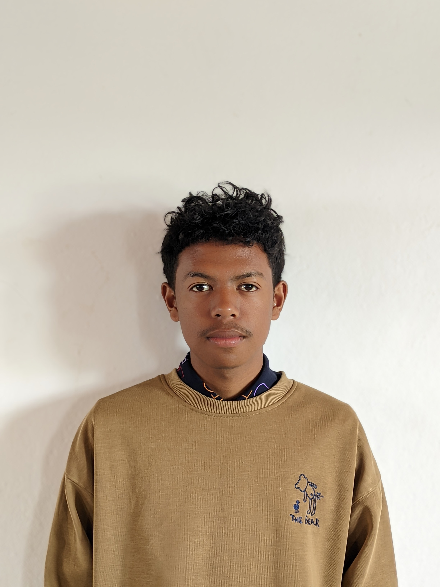

Obtenu le diplome CEPE en 2017.
Obtenu le diplome BEPC en 2022.
Obtenu le diplome BACC en 2025.
Commencer a etudier en EMIT en parcours DA2I L1.
Anglais: Assez bien
Français: Bien
Malagasy: Très bien
Tel: +261386725981
Adresse Email: gabrielrazafimandimby@gmai.com